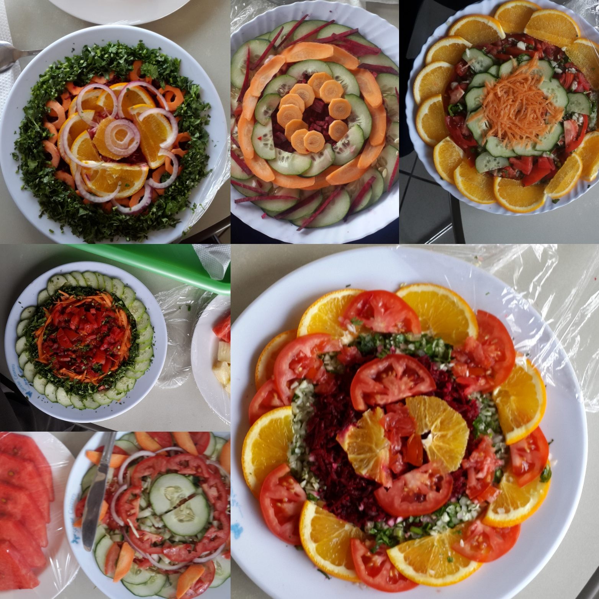

Introduction
Name
Njonge Victor King'e
Age
25
In my opinion - the whole purpose to life is happiness,
learn follow your heart - not your head,
life will handle the rest
Illiteracy in the twenty first century is not about reading or writting, but peoples inability to Learn, Unlearn and Relearn.
Credits:Can't recall
2017-2018
Moringa School (Ongoing)
Mobile and Web development
:Involving 19 weeks covering foundational concepts of programming languages in various tracks (web, mobile, cloud) offered in a 5-month course.
2013 - 2016
D.T Dobie Training Center
An initiative between Daimler Germany,
GTZ Germany and D.T dobie Kenya providing up-to-date automotive mechatronics’ apprenticeship for three years.
As a test study the apprentices will restore a vehicle from the bare minimum.
Mechanics carry out maintenance and repair work both independently and as part of a team. They analyze electrical, electronic, mechanical, pneumatic and hydraulic systems, ascertain and eliminate errors and malfunctions.
They utilize computer-aided information and communications systems for the preparation of test reports.
2010 - 2013
Aqua Kenya Swimming Club KCA university
I've always held a keen interest in health and exercise. More so after ill health
cutailed my progress in proffesional swimming. Since i've tried a myriad of borderline
crazy stuff - like going on a raw food diet for three years to deal with a skin issue - it worked.
The expeience was nothing short of enlightning. After suffering through the first three months of withdrawal. it's kind of a human reset button.
We are what we eat. That said, I'm a big fan of greasy food.
. "

I did a certificate course in IT after high school at KCA.
Up until then I'd gone through and completed the 8-4-4 system and the paper work that comes with it - read
-
KCPE
-
KCSE
Respectively
A fortnight into joining Moringa Prep
I have afew projects to my name - however basic they may be - I am very proud of
my progress having never done any prior web-design
Among the projects done one, only one is published:
-
https://vinge1718.github.io/First-Proj/ - Grid Coloring Assignment
Below that are the links to the repos used to practice HTML so far
-
https://github.com/Vinge1718/cookie-recipe - Identation problems.
-
https://github.com/Vinge1718/my-first-webpage - HTML and REAMme practice
files
I'm reacheable via:
-
Email Victor
-